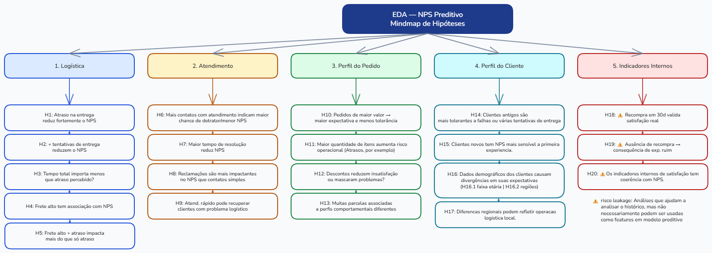

Como dados operacionais de logística e atendimento podem antecipar a satisfação do cliente — antes da pesquisa acontecer.
Atualmente, o NPS é coletado apenas após o encerramento da jornada do cliente. Isso significa que, quando a empresa descobre a insatisfação, já é tarde para agir. Este projeto propõe uma abordagem diferente: usar dados operacionais já disponíveis durante a jornada para prever o NPS antes da pesquisa.
Quais fatores operacionais explicam a insatisfação do cliente — e como a empresa pode agir de forma preventiva para reduzir a geração de detratores antes mesmo da pesquisa de NPS ser aplicada?
Detectar antecipadamente pedidos com alta probabilidade de atraso para acionar intervenções preventivas na operação.
Identificar clientes com múltiplos contatos e reclamações para tratamento prioritário antes que a insatisfação se consolide.
Transformar dados operacionais em uma pontuação preditiva de NPS acionável em tempo real pelas equipes.
Antes de qualquer análise, verificamos a integridade dos dados disponíveis. A base se mostrou sólida: sem valores ausentes, sem duplicatas e com cobertura completa em todas as colunas.
Investigamos 20 hipóteses em 5 blocos temáticos — logística, atendimento, perfil do pedido, perfil do cliente e indicadores internos. Apresentamos aqui os achados de maior relevância para o negócio.

Mapa mental das 20 hipóteses investigadas em 5 blocos temáticos
📦 Atraso na entrega é o principal driver de insatisfação
Clientes com ao menos um dia de atraso têm NPS médio 2,8 pontos abaixo dos clientes sem atraso. A leitura visual e as estatísticas descritivas mostram uma queda consistente de satisfação conforme aumentam os dias de atraso.
🎧 Atendimento rápido atenua os danos do atraso
Entre clientes que sofreram atraso, resolver o problema em até 2 dias está associado a um NPS médio 1,26 pontos maior do que quando a resolução leva mais de 9 dias. Agilidade no atendimento não elimina o impacto do atraso, mas reduz o dano na experiência.
🧪 Hipóteses logísticas complementares
Nem todo indicador operacional mostrou o mesmo peso do atraso. Tentativas de entrega ficaram praticamente estáveis entre os grupos, enquanto frete alto entre clientes atrasados sugere apenas um agravamento pequeno na satisfação.
🔍 O que não impactou o NPS
Comparamos seis versões de modelos de regressão, incluindo o Gradient Boosting com hiperparâmetros otimizados, para estimar o score de NPS usando apenas dados disponíveis operacionalmente antes da pesquisa. A partir do score previsto, derivamos automaticamente a classificação Detrator / Neutro / Promotor.
A EDA evidenciou relações lineares entre NPS e variáveis operacionais. Um modelo de regressão preserva a granularidade da nota: saber que um cliente tende a dar nota 2 versus nota 5 é informação acionável para priorização — ambos são "Detratores", mas representam graus muito diferentes de insatisfação. A classificação Detrator / Neutro / Promotor sai automaticamente da nota prevista, aplicando a mesma regra de negócio padrão.
repeat_purchase_30d — a recompra acontece após a pesquisa de NPS; 92,2% dos promotores recompraram, tornando-a um proxy direto do target.
csat_internal_score — correlação de 0,56 com NPS, mas metodologia de cálculo desconhecida; pode incorporar o próprio NPS ou ser coletado após a pesquisa.
Métricas Completas — Conjunto de Teste (20% dos dados)
| Modelo | RMSE ↓ | MAE ↓ | R² ↑ | Desempenho relativo |
|---|---|---|---|---|
| ✅ Gradient Boosting com Hiperparâmetros Otimizados | 1,6795 | 1,3201 | 0,5498 | |
| Ridge (regularizado) | 1,6965 | 1,3303 | 0,5406 | |
| Lasso (regularizado) | 1,6969 | 1,3310 | 0,5404 | |
| Regressão Linear (baseline) | 1,6974 | 1,3317 | 0,5401 | |
| Random Forest | 1,7143 | 1,3483 | 0,5309 | |
| Gradient Boosting | 1,7209 | 1,3553 | 0,5273 |
Classificação Derivada - Modelo selecionado
A partir da nota prevista, clientes são classificados pela regra padrão de mercado (≤6 Detrator, 7–8 Neutro, ≥9 Promotor). A métrica prioritária é o recall de Detratores: não identificar um detrator (falso negativo) tem custo maior do que acionar preventivamente um cliente que seria neutro.
Com base nos padrões identificados na análise exploratória e nos resultados do modelo preditivo, destacamos as ações de maior impacto potencial para redução de detratores.
O atraso é o fator de maior impacto. Monitorar pedidos com previsão de atraso e acionar logística preventivamente é a ação de maior retorno em NPS.
Clientes com atraso e resolução em até 2 dias têm NPS 1,26 pontos acima dos que esperam mais de 9 dias. Agilidade recupera satisfação mesmo quando o problema já ocorreu.
Com alto recall em detratores, o modelo pode gerar alertas operacionais para clientes com maior risco de detração, permitindo intervenção antes da pesquisa. A performance deve ser monitorada continuamente para evitar degradação fora da amostra de treino.
A partir de 8 reclamações, não há promotores. Um alerta operacional ao atingir 5 reclamações pode evitar que o cliente atinja o patamar crítico de insatisfação.
⚠️ Limitações e Cuidados